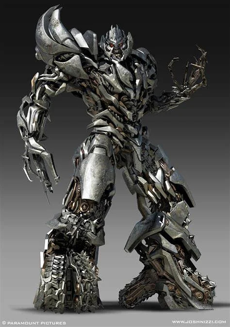
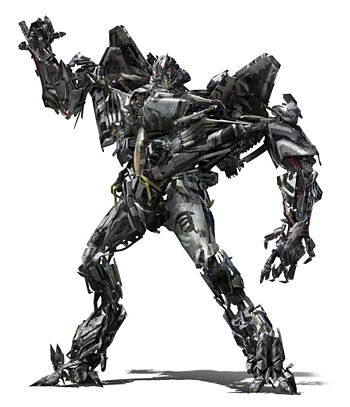
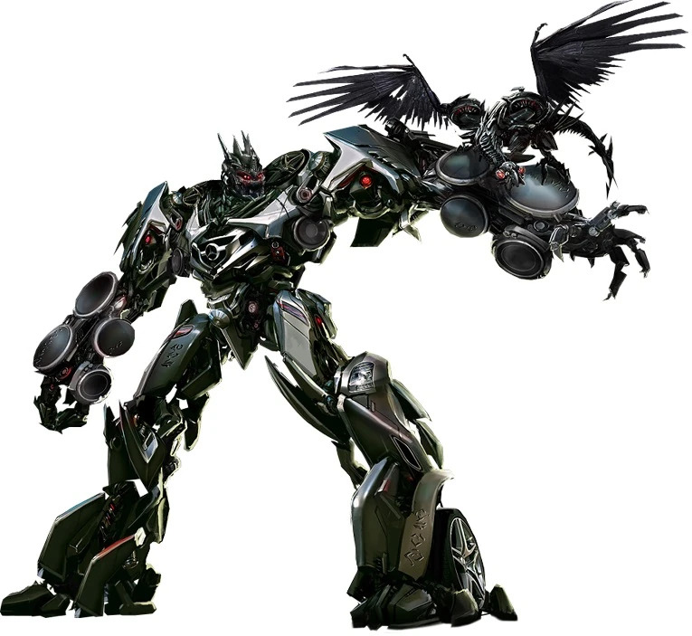
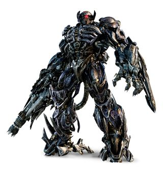
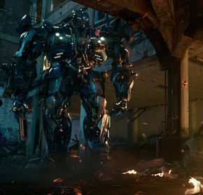
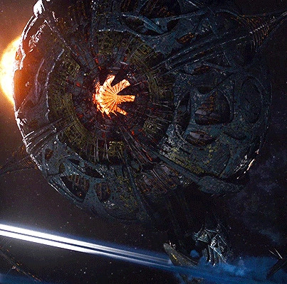

The Decepticons originated on Cybertron, the mechanical home world of the Transformers. Long before the war, Cybertron had a strict social hierarchy where many robots were forced into labor roles with little freedom. One of those workers was Megatron, originally a gladiator and minor. Witnessing corruption and inequality, he began a revolution to overthrow Cybertron's ruling class. At first, Megatron's movement promised justice and equality but over time it became increasingly violent and authoritarian.
Megatron formed the Decepticons as a revolutionary army. Their early goals:
* Destroy Cybertron's corrupt government
* Seize contorl of energy resources
* Establish a new order ruled by strength
Many Transformers joined him because they felt oppressed. However, Megatrons ideology evolved into a belief that:
* Power equals the right to rule
* Other worlds exist to be conquered
* Peace is weakness
This shift sparked a civil war against the Autobots.
The Decepticons launched a massive war against the Autobots led by Optimus Prime.
Key features of the Decepticon War machine:
* Focus on conquest and domination
* Preference for military vehicle and weapon alt-mode
* Ruthless battlefield tactics
Across the long history of the Transformers universe, there are hundreds of members of the Decepticons. Different TV shows, comics, films, and toy lines introdue new characters regularly, expanding the ranks of Decepticons far beyond the small core team that most audiences first encounter. Despite the constantly growing roster, a small group of Decepticons appears consistently across many different versions of the franchise. These characters often serve as the backbone of the Autobot team regardless of timeline or adaptation.
| Tranformer | Vehicle | Rank | About |
|---|---|---|---|
| Megatron | Varies | Decepticon Leader | The ruthless leader of the Decepticons. Driven by desire for absolute power and control. Master strategist and warrior. |
| Starscream | Fighter Jet | "Second in Command" | Ambitous and cunning, and constantly planning on overthrowing Megatron. Master Aerial Combatist. |
| Soundwave | Surveillance Vehicles/Devices | Communications Officer | A cold, calculating communications officer, Soundwave is fiercly loyal to Megatron. He specializes in Surveillance, espionage and information warfare |
| Shockwave | Laser Cannon | Chief Scientist | The embodiment of of logic and scientific precision. Shockwave is the Decepticons Chief Scientist. Emotionless and highly intelligent. |
| Barricade | Poice Car | Frontline Enforcer | Usually serves as a law enforcement themed enforcer and hunter for rogue Decepticons. Uses his alt form as a Police Car for Urban Operations involving taking down enemies. |
While the exact lineup of Decepticons changes from series to series, these five characters frequently appear together in many versions of the story.





